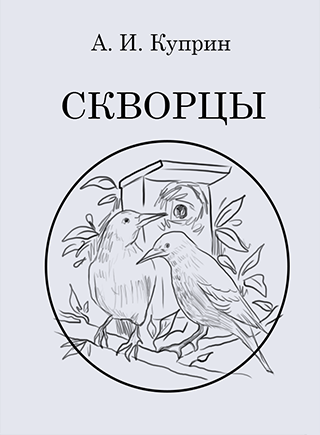

Автор: Куприн Александр Иванович
Жанр: русская классика

Описание книги:
«Была середина марта. Весна в этом году выдалась ровная, дружная. Изредка выпадали обильные, но короткие дожди. Уже ездили на колесах по дорогам, покрытым густой грязью. Снег еще лежал сугробами в глубоких лесах и в тенистых оврагах, но на полях осел, стал рыхлым и темным, и из-под него кое-где большими плешинами показалась черная, жирная, парившаяся на солнце земля. Березовые почки набухли. Барашки на вербах из белых стали желтыми, пушистыми и огромными. Зацвела ива. Пчелы вылетели из ульев за первым взятком. На лесных полянах робко показались первые подснежники…»